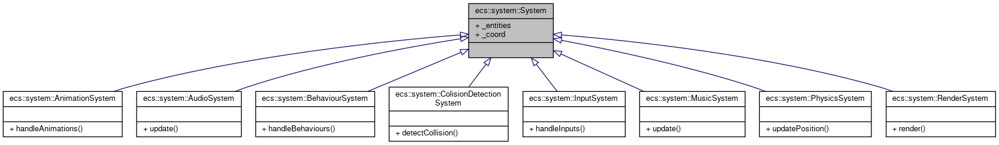

- Generated by
 1.9.2
1.9.2
|
RType 1.2
Documentation for the RType project at EPITECH
|
ECS stands for Entity-Component-System. It's a design pattern that is used to decouple data from logic.
This ECS design consist of several class.
At the top level, there is the Coordinator class. This class ties everything together, and the only thing it really does is call the method of the different managers.
Before talking about the managers, i need to introduce the concept of signature.
A signature is a std::bitset (basically an array of 0's and 1's). Each Entity has a signature describing the components that are tied to it. When you register a new component, a unique ID is tied to its type. This unique ID corresponds to an index in the signature.
Example: Let's say you have a position component. When you register it in the ComponentManager, a unique id is tied to its type. You can then create a new signature and set inside it the index corresponding to the unique id to 1.
Now, if you tie this signature to an entity, this entity will have the position component and all of the systems needing the position component will know that this entity can be affected by it.
The EntityManager class is focused on the management of entities. An entity is essentially an ID that represents a game object, and the EntityManager is responsible for creating, tracking, and destroying these entities. Let's break down its responsibilities:
Core Responsibilities:
Entity Creation (createEntity): Handles the creation of a new entity. It typically involves assigning a unique ID to the entity. If there are available IDs (recycled from destroyed entities), it reuses them; otherwise, it creates a new one. This process ensures that the system can handle a large number of entities efficiently by reusing entity IDs while also efficiently packing the data, avoiding missed CPU cache-line.
Entity Destruction (destroyEntity): This function is responsible for properly disposing of an entity. When an entity is no longer needed (like when a game object is removed from the game), this function is called to release its ID and mark it as available for future use. This is crucial for managing the lifecycle of game objects without leaking resources or IDs.
Signature Management (setSignature, getSignature): Each entity in an ECS architecture has a signature, which is essentially a bitset where each bit represents whether the entity has a particular component type. This feature allows systems in the ECS framework to quickly determine which entities have the components they are interested in processing. The EntityManager is responsible for updating (with setSignature) and querying (with getSignature) these signatures.
### Second, the ComponentManager: This one is a bit trickier, its goal is to handle all the different components (which are basically structs).
>This class is a template class, meaning it's designed to store components of any type (T). It's used to manage a specific type of component for all entities. Each ComponentArray instance corresponds to a different type of component in the ECS architecture. Its primary functions include: >>Inserting Components: When a new component is added to an entity, it's stored in an array. The class maintains a mapping between the entity ID and its index in this array, ensuring fast access.
>Removing Components: When a component is removed from an entity, this class updates its internal structures to reflect this change, keeping the array packed by moving the last element to the position of the removed element.
>Accessing Components: It allows quick retrieval of a component attached to an entity using the entity ID.
>Handling Entity Destruction: If an entity is destroyed, this class ensures that all components associated with that entity are properly removed.
This class is a crucial part of the ECS architecture, enabling efficient and type-safe storage and retrieval of components.
>The ComponentManager serves as the central point for managing different types of components in the ECS framework. It's responsible for:
>Component Type Registration: Each component type (like Position, Velocity, etc.) is registered with a unique identifier. This registration process involves creating a ComponentArray for each new type.
>Adding and Removing Components: It delegates the task of adding or removing components to the appropriate ComponentArray, based on the component type.
>Component Retrieval: It provides a way to access specific components of an entity, again delegating to the relevant ComponentArray.
>Entity Destruction Handling: When an entity is destroyed, the ComponentManager notifies each ComponentArray to remove any components associated with the destroyed entity.
In essence, the ComponentManager abstracts the complexities of handling various component types, allowing the rest of the ECS system to interact with components through a unified interface.
The System class is a base class for all systems within the ECS framework. Systems are responsible for the logic that operates on entities that have a specific set of components.
Each system maintains a set of entities that it is interested in. These are the entities that have the components required by this system to operate.
The SystemManager plays a central coordinating role for all the systems in the ECS architecture. It's responsible for:
>System Registration (registerSystem): This function is used to create and register a new system. It ensures that each system type is registered only once and stores a shared pointer to the created system. This approach allows for easy and efficient management of different system types within the game.
>Setting System Signatures (setSignature): Each system operates on entities with a specific set of components. The setSignature function associates a signature (a bitset representing component types) with a system. This signature is used to determine which entities the system should process.
>Handling Entity Destruction (entityDestroyed): When an entity is destroyed, SystemManager ensures that this entity is removed from all system's tracking sets, maintaining the integrity of each system's entity list.
>Updating Entity Signatures (entitySignatureChanged): When an entity's signature changes (due to adding or removing components), the SystemManager updates the entity sets of all systems. It checks each system's signature against the entity's new signature. If the entity's signature matches a system's signature, the entity is added to that system's set; otherwise, it's removed.
The Coordinator class serves as the central orchestrator for the ECS, tying together the functionality of the EntityManager, ComponentManager, and SystemManager. Here's an overview of the global workflow in this ECS architecture:
>Init Phase: Upon initialization (init method), the Coordinator creates instances of EntityManager, ComponentManager, and SystemManager. This setup establishes the foundational structures for entity management, component handling, and system operations.
>Creating Entities: When a new entity is needed (createEntity), the EntityManager generates a new entity ID.
>Destroying Entities: When an entity is destroyed (destroyEntity), the EntityManager, ComponentManager, and SystemManager are all notified to remove any references to this entity, clean up components, and update system entity lists.
>Registering Components: Components are registered (registerComponent) with the ComponentManager, allowing for the creation and tracking of different component types.
>Adding Components: When a component is added to an entity (addComponent), it is stored in the ComponentManager, and the entity's signature in the EntityManager is updated. The SystemManager is also notified to update the entity lists in relevant systems.
>Removing Components: Removing a component from an entity (removeComponent) follows a similar process but in reverse, updating the entity's signature to no longer include the component type.
>Registering Systems: Systems are registered (registerSystem) with the SystemManager. Each system is responsible for processing entities with specific components.
>Setting System Signatures: Each system has a signature (setSystemSignature) that determines which entities it will process, based on their components.
When a game object is created, an entity ID is generated.
As components are added to or removed from this entity, the Coordinator updates the entity's signature to reflect its current component makeup.
The SystemManager uses these signatures to maintain an up-to-date list of entities for each system.
Each system processes its specific subset of entities, based on the components they possess.
First we create two very basic components :
Then we set up the MovementSystem:
[!CAUTION]
The coordinator is a static member initialized during the init call of the coordinator class.
It is not thread safe ! So manage with caution
Now we can do our basic initialization routine :
Create our system and assign it its signature :
Then create our entities and attach them the different components :
And finally, call the update function of our system inside our game loop :
[!NOTE] You can find the full example along with a CMakeLists inside the examples/ecs folder.
